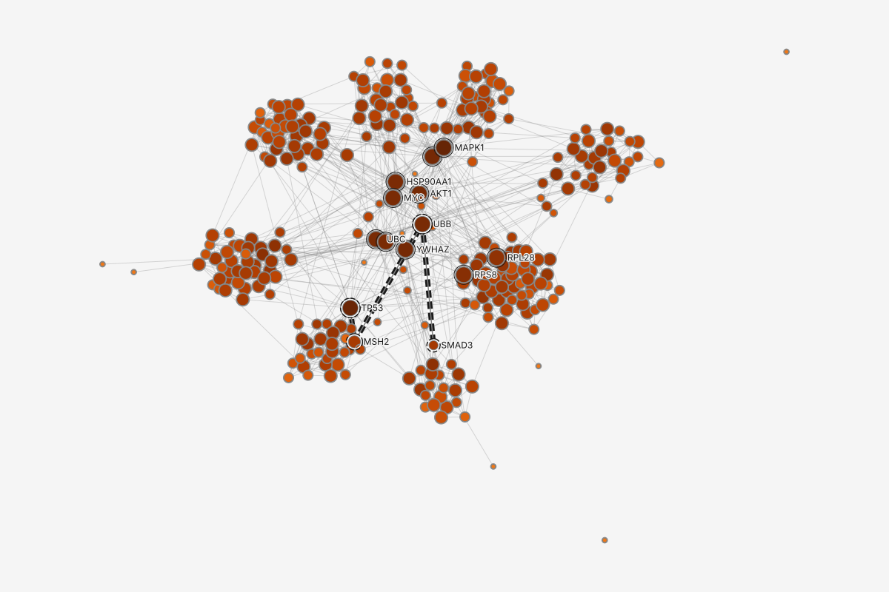
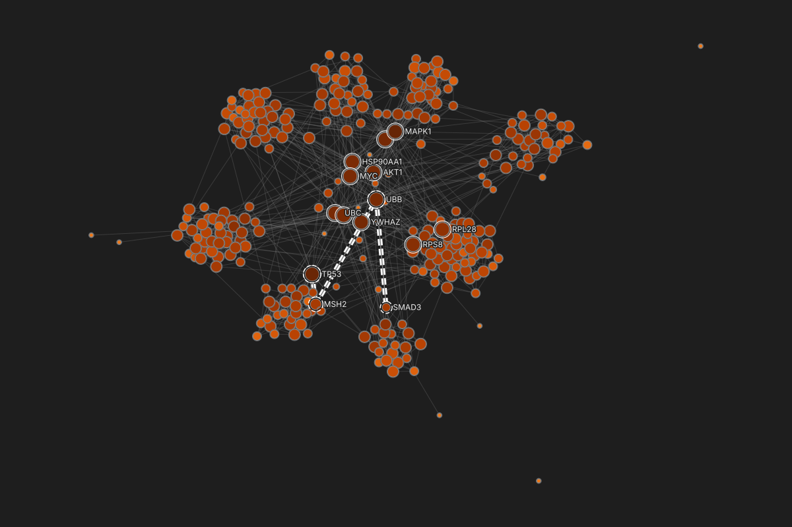
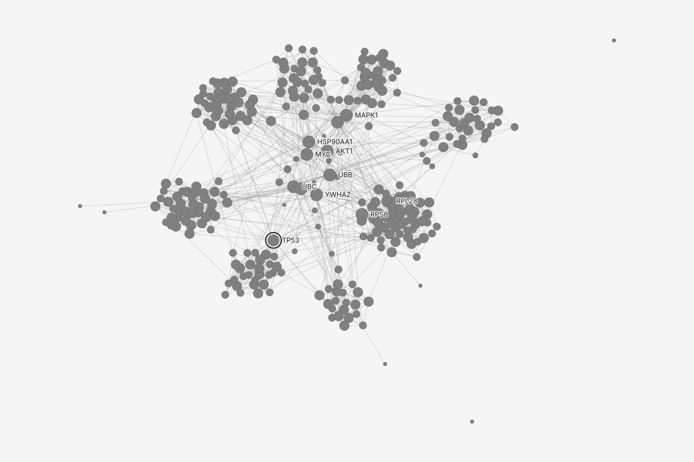
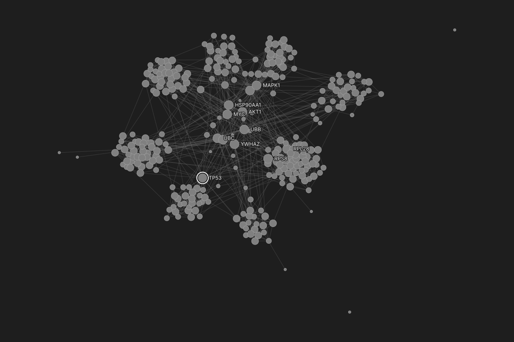
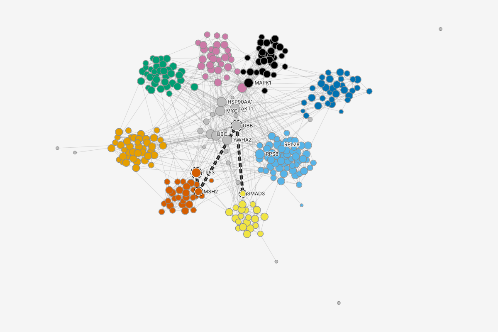
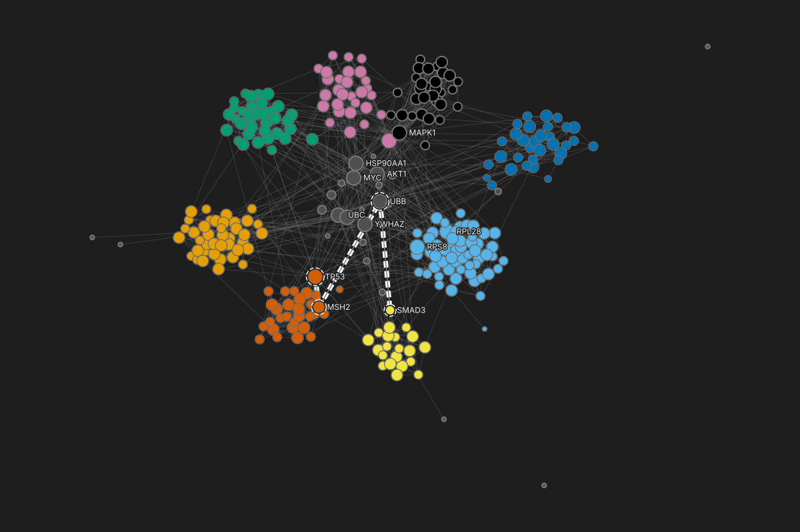
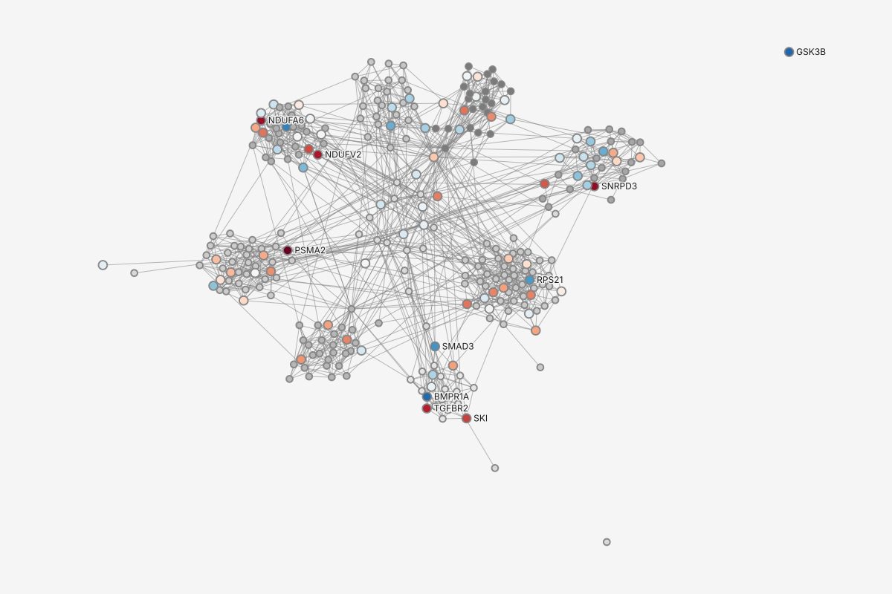
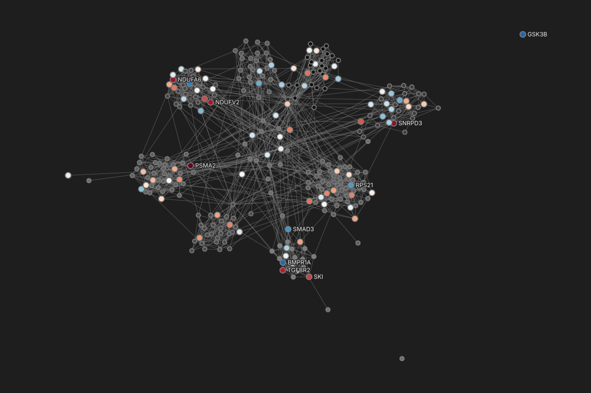
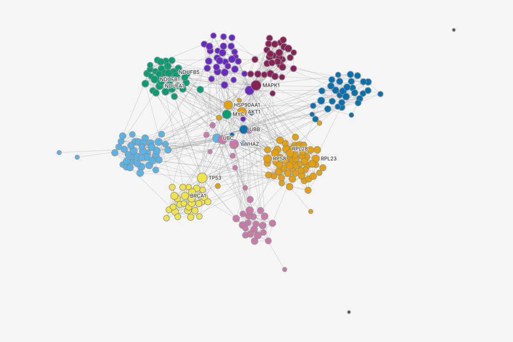
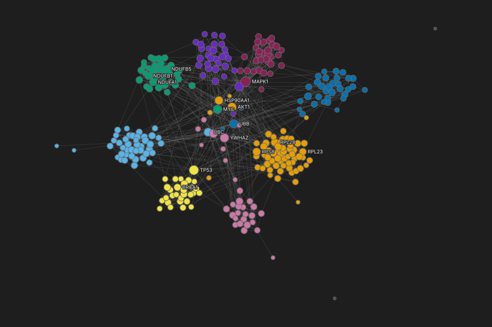

Color: betweenness
00.0010.010.1
betweenness, 0 to 0.138, log scale; 10 at 0, lightest
Labels: top 12 by degree
Aanames12
2 hidden where labels overlap
Size: degree
0 to 1
2 to 3
4 to 7
8 to 16
17 to 34
Dr. Chen's 300-protein interaction network, styled by a stack of layers: two added by runs (betweenness, and a shortest path from TP53 to SMAD3) and two she made (degree as size, names on the top 12 by degree). A run's layer paints only what carries its result.
New after the third study and the owner's review: the stack lives in the right panel. With nothing selected, the inspector's Style stack section is the whole ordered stack, with drag handles, "top wins" and the legend's switch, and the Look control labeled in its header (frames 1 to 4, 10 to 17). With a protein selected, its Appearance section is the same stack in the same order: the layers that paint the protein are highlighted and say what they win, a layer that is covered on it says by what, and "+" adds a layer for the selection (frames 5 to 9). The color picker has Custom and Libraries tabs; Libraries holds palettes and the style layers of applied recipes (8 and 9).
New after the fourth study: the Style stack's + opens a menu with Empty layer, From a recipe or file..., and layers suggested for this graph, such as Mute categories under this scale and Shape by kind. A .graphty file of styles is a recipe too, under the same one word. A suggestion is only offered: nothing is styled until the reader picks it, and what it adds is an ordinary layer (28 and 29).
The legend (30 to 32): a label selects its group; the swatch, or Change color... in the entry's menu, opens the picker with colors no other entry uses first. Every swatch says its color in words, each change is announced ("Community 5 is now Wine, was Vermilion"), and one too-close flag with Fix... sits under the entry it concerns. Step labels explain themselves like statistics do (33).
Frame 18 measures the build at a laptop size; frame 19 is the left-panel placement it replaces, for comparison. 20 to 22 and 27 are dark.
Kept from earlier rounds: a layer that paints nothing says which layer covers it and offers Move above (12 and 15); size by a signed column says it shows the magnitude (15); labels on the top N by a column (16); legend titles say what each channel encodes; comparing a group with the rest, descriptive only (23 to 27); the method catalog's plain task lines, now in the main menu's Algorithms (25). Colors by category and by a signed value are in Color or size by a value.
Waiting on graphty-element, drawn here but unable to ship until it lands, and tagged in the notes: the painted count and Select painted, the hover mark on what a layer paints, the collapsed "N layers match no protein" row, the name of the layer that covers a covered one ("Covered by ... above"), what each layer wins on the selection and what covers it there, the Look menu's registered Looks, the Base style row, and the Overrides row, which this session does not use.
ControlSection.Text size xs with an icon.Tree row with a drag handle, a need.Popout.Panel with PopoutHeaderConfig.Popout, HistogramRow, RampRow.SwitchRow.

Tree row.Tree, its "into" zone disabled.Popout.Panel, FieldRow, DataRow.Tree rows.

TrailingSlot, ActionIcon, Tooltip position left.StyleSelect, ToggleIconButton.VariablePill, ControlSection empty state.

Tree, one instance.Tree row with a description line, a need.ActionIcon.Tree multi-select, a need.

ActionIcon.StyleSelect.CompactColorInput.ColorPickerPanel.SWATCH_COLORS_HEXA, set by the caller.ColorPickerPanel tabs.Tree rows with chips.Tree, a "N more" row, a need.Tree drag, variant.

DataRow, ProseBlock.

ControlSection empty state, ProseBlock.Tree row with a description line, a need.Button size xs.VariablePill.FieldRow with NumberInput and StyleSelect.VariablePill.StyleSelect with a ControlSection header slot.Menu (dark), items with a description, a need.ResizeHandle.

DataRow, Tooltip.ControlSection, ProseBlock.HistogramRow.Table (compact), Text.Button variant default, size xs.Menu with closeOnItemClick off, checkbox items.Menu (dark), items with a description, a need.Badge.Tooltip on focus and hover.

StyleSelect.VariablePill.UnstyledButton.Menu (dark).ColorPickerPanel in a Popover.

Notification.Tooltip on focus and hover.